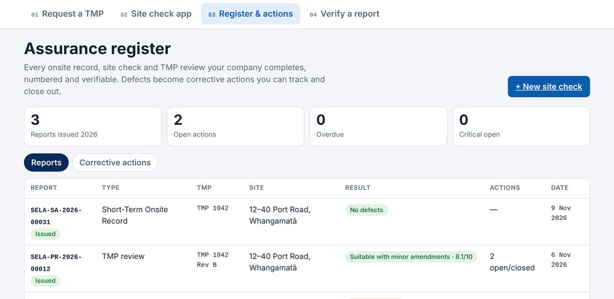

Sign in at tmp.selacivil.co.nz/assurance on a computer to see every report your company has completed: report number, type, TMP, site, result, open actions and date. Tap a report to see its PDF. Withdrawn reports stay on the register, marked withdrawn.

Sample data shown.
On a computer, sign in to the assurance register to see every report your company has completed, with the report number, type, TMP, site, result, open actions and date. Tap a report to see its PDF. Withdrawn reports stay on the register, marked as withdrawn.